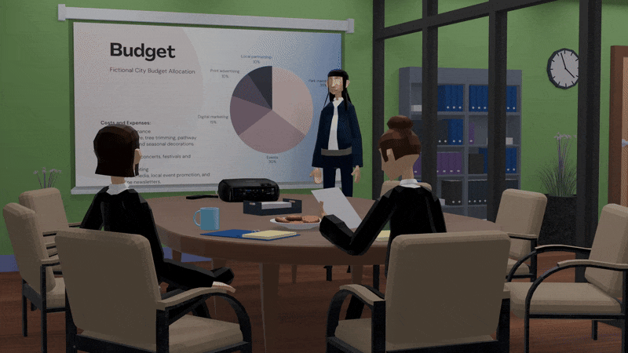
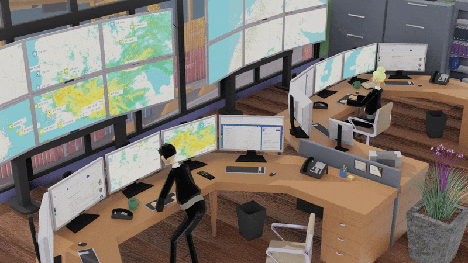

KymVake
Hankkeen kuvaus
KymVake – Kymenlaakson alueellisen varautumisyhteistyön kehittäminen hankkeessa kehitetään Kymenlaakson koulutus- ja tutkimusorganisaatioiden, yritysten ja kolmannen sektorin alueellista varautumisyhteistyötä. Hanke toteutetaan Kaakkois-Suomen ammattikorkeakoulu Xamkin ja Merikotka ry:n yhteistyönä.
Hankkeen ensisijaisena tavoitteena on vahvistaa pienten ja keskisuurten yritysten (pk-yritysten) kyberturvallisuusosaamista ja kyberuhkiin varautumista Kymenlaakson alueella. Tavoitteena on parantaa yritysten kykyä reagoida tehokkaasti kyberuhkiin. Hankkeessa pilotoidaan myös voimahuollon varautumistoimenpiteitä erityisesti sähköenergian tuotannon, jakelun ja varastoinnin osalta.
Työntehtävän kuvaus
Olen toteuttanut useita erilaisia animaatioita harjoitusten tueksi. Osa animaatioista on esitetty alla. Lisää animaatioita löytyy tästä linkistä, josta pääsee myös tutustumaan rakentamaamme kurssis sisältöön.
Työtehtäviini kuuluu myös erilaisten tapahtumien suunnittelu sekä niihin osallistuminen.

Yllä olevassa videossa näkyy, kuinka toteutimme fiktiivisen, tarinapohjaisen skenaarion, jossa esiintyy laaja sähkökatkos. Tässä animaatiossa havainnollistetaan kyseistä sähkökatkosta.

Yllä olevassa kuvassa näkyy logistiikkaharjoitusta varten Blenderillä toteutettu animaatio.

Yllä olevassa kuvassa näkyy logistiikkaharjoitusta varten Blenderillä toteutettu animaatio.
Digitaalisten harjoitusten kehittäminen
Tuotamme maksuttomia harjoitussisältöjä, jotka on suunnattu Kymenlaakson alueen pk-yrityksille, kolmannen sektorin toimijoille ja oppilaitoksille. Harjoitussisältöjen kehittäminen perustuu toimijoiden tarpeisiin, jotta niistä saadaan mahdollisimman käytännön läheisiä ja relevantteja.
Haasteet ja ratkaisut
Haasteena on ollut edelleenkin päästä havainnoimaan harjoituksia paikan päällä. Osa Kymvake-tiimiläisistä pääsi kuitenkin osallistumaan PAPU KYBER 2025 harjoitukseen. Näiden harjoitusten kautta saamme oppia, miten suurempia harjoituksia toteutetaan. Lisäksi pystymme seuraamaan, miten yritysten ja viranomaisten yhteistyö toimii käytännössä.
Väliarviointi
Hankkeessa on kehitetty sisältöjä logistiikan, voimahuollon ja ensihoidon digitaalisiin harjoituksiin. Tällä hetkellä harjoituksiin on lisätty uusia osioita ja muokattu aiempia harjoituksia edelleen.
Hankkeessa on myös suunniteltu tulevaa tapahtumaa Turvaa ja Taitoa, joka järjestetään 3.10. Tapahtuman suunnitteluun ja toteutukseen osallistuu useiden eri alojen asiantuntijoita sekä koulutus. Aamupäivä on tarkoitettu toisen asteen opiskelijoille, jotka kiertävät koulutusten esittelypisteillä tutustuakseen oppilaitoksiin ja koulutusmahdollisuuksiin. Iltapäivä on omistettu alueen yrityksille.